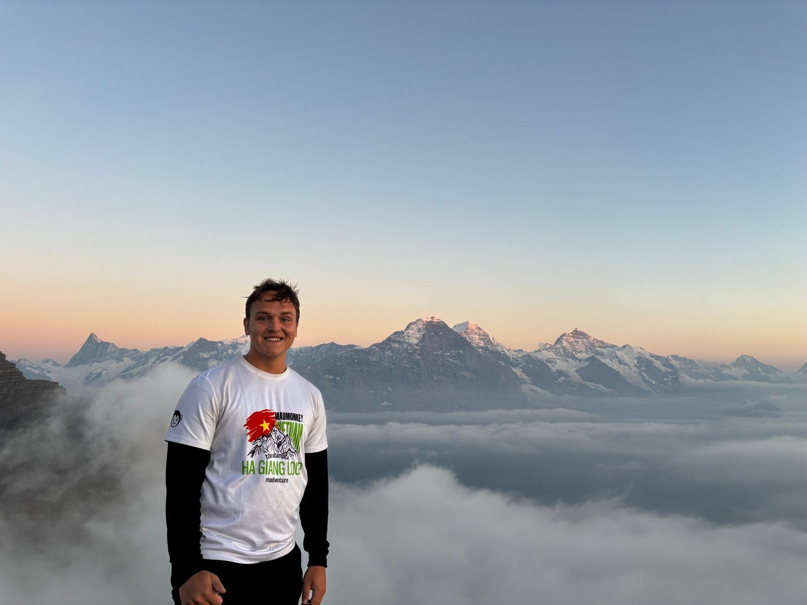

2024–2026
Master's programme in Finance
School of Business, Economics and Law, University of Gothenburg
Master's thesis graded A. Courses in private equity and derivatives, among others. Private equity was my favourite.

I studied a master's in finance at the School of Business, Economics and Law in Gothenburg. For our thesis, my co-author and I wrote a Python algorithm that reads the SEC filings of US-listed companies to find the ones run by their founder. I'd like to keep doing that kind of work, where you take a large, messy source, make it measurable and run the numbers.
Founder-CEOs and Firm Value: Evidence from Performance, Returns, and Investment Behavior in U.S. Firms. Co-authored, June 2026. Grade A.
We followed 1,578 US-listed firms from 2010 to 2024 and asked whether having a founder as CEO goes together with differences in valuation, stock returns and investment. We built the founder data ourselves, in four steps.
Language-based research on annual reports from Nasdaq Stockholm's main market.
Annual reports are mostly words, and most analysis only uses the numbers. I'm building a research site that treats the text as data. It compares each company's report for financial year 2025 with the one for 2024 and measures how much the language changed, and where. It's the same kind of Python text analysis as in the thesis, pointed at the Swedish market.
The approach follows Lazy Prices (Cohen, Malloy and Nguyen, Journal of Finance, 2020), which found that US firms that changed the wording of their annual reports later underperformed. I haven't tested that on Swedish companies, so I'm building this as a way to decide which reports to read first, not as a trading signal.
I'll link it here when it's live.
I pick up new tools and subjects quickly. AI tools like Claude and ChatGPT are a normal part of how I do analysis, and I used them to speed up coding and analysis in my thesis. On a team, I hope I can bring that habit with me and show where AI actually saves time.
My background is in both economics and political science, so I'm used to putting numbers in context.
Master's thesis graded A. Courses in private equity and derivatives, among others. Private equity was my favourite.
With an exchange semester at Aalborg University, 2022–2023.
I've invested on my own in the Swedish and US stock markets for five years. Away from the desk I like to travel, hike and cook. I'm a sports fan in general and a football fan in particular.